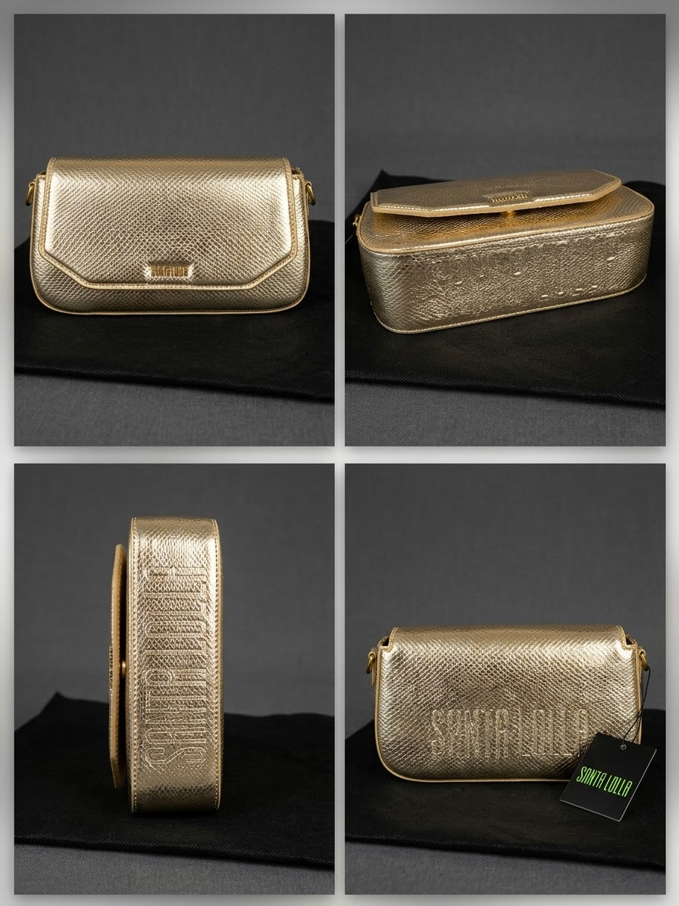
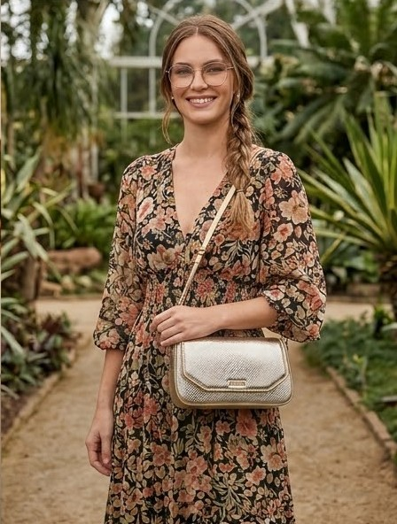
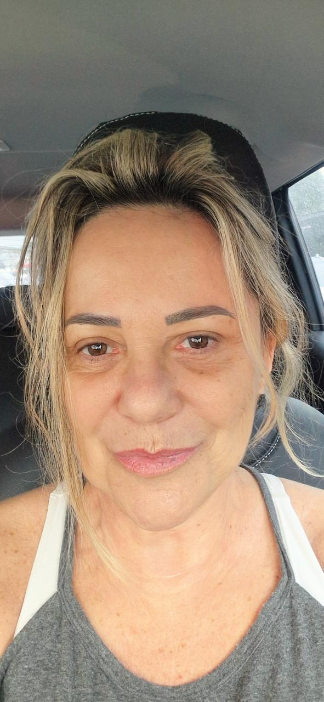

☉
Sol em
↗Gêmeos
Identidade, vitalidade e o centro da sua expressão.
 Início
Início

Uma comunidade de autoconhecimento que une astrologia,tecnologia e desenvolvimento humano.
ESTAMOS CONVIDANDO OS PRIMEIROS MEMBROS FUNDADORES PARA PARTICIPAR DA CONSTRUÇÃO DO ENTRE ESTRELAS.
O que já existe
O que estamos construindo
Estamos desenvolvendo novas ferramentas para apoiar decisões importantes da vida:
A parte mais importante
Os primeiros fundadores ajudarão a construir o futuro do Entre Estrelas.
Ao se tornar um fundador você receberá:
Bônus
Entre os primeiros Membros Fundadores será sorteada uma bolsa exclusiva Santa Lolla, gentilmente oferecida para apoiar o lançamento do projeto.


Agora você pode ajudar a construir este espaço desde o início.
⭐ Valor Único de R$ 49,50
⭐ Quero ser Membro FundadorPreencha os dados para montar uma leitura inicial do seu mapa.
Identidade, vitalidade e o centro da sua expressão.
O mundo emocional e aquilo que traz conforto.
A primeira impressão é o jeito de entrar na vida.
Posições às 00:00 no horário da localidade escolhida.
Planeta em movimento retrógrado
Períodos entre o último aspecto da Lua e a entrada no próximo signo, no horário da localidade escolhida.
A história por trás do Entre Estrelas
Fundador do Entre Estrelas
Astróloga Fundadora
Mentor técnico

Astróloga Fundadora
Meu nome é Felipe Gonçalves. Sou formado em Ciência da Computação desde 2006, com pós-graduação em Marketing e Finanças.
Trabalhei em grandes empresas de tecnologia, como IBM e Microsoft, onde fiquei por mais de doze anos e ajudei organizações como Globo, Petrobras e a Bolsa de Valores a se transformarem digitalmente. Atuei em finanças, governo, educação, saúde e telecomunicações.
Mas sempre estudei astrologia. Há muitos anos. Fiz cursos, me aprofundei, aprendi a ler mapas, a entender ciclos, a olhar para o céu com outros olhos.
Em algum momento, percebi que podia unir as duas coisas.
A ideia é simples: criar uma comunidade onde qualquer pessoa possa ter acesso a análises de astrologia gratuitas, conteúdo de qualidade e uma rede de apoio.
Onde astrólogas com muito conhecimento e experiência possam ter suas próprias páginas, oferecendo cursos, mentorias, lives e atendimentos.
E onde a astrologia não seja tratada como determinismo, mas como linguagem simbólica, como bússola, como convite para olhar para dentro e para cima ao mesmo tempo.
Todos somos estrelas. Todas têm a sua luz. Todas têm o seu caminho.
O Entre Estrelas reúne pessoas que olham para o céu com profundidade, respeito e voz própria. Cada participante tem seu espaço dentro do portal, com suas páginas, seus conteúdos, seus atendimentos e seu jeito de olhar a astrologia.
Fundador do Entre Estrelas
Cientista da Computação desde 2006, com pós-graduação em Marketing e Finanças. Atuou em grandes empresas de tecnologia, como IBM e Microsoft, e ajudou organizações como Globo, Petrobras e a Bolsa de Valores a se transformarem digitalmente.
Está se formando em Psicanálise e já fez diversos treinamentos voltados para o autoconhecimento, como PNL Master e Astrologia Analítica. Atuou como coach de autoconhecimento e faz atendimentos desde o início dos estudos em astrologia — dado a facilidade com o tema, teve seus primeiros clientes ainda durante a formação. De lá pra cá, já somam mais de 500 atendimentos.
Criou o Entre Estrelas para unir o céu e a tecnologia em uma comunidade acessível e acolhedora.
Assim como os reis magos se guiaram pelas estrelas até Jesus, que essas mesmas estrelas possam iluminar o seu caminho.
Astróloga Fundadora
Socióloga, pós-graduada em Sociopsicologia e Psicanalista. Acredita que "a astrologia nos ajuda a compreender nossos ciclos, reconhecer nossos potenciais e ampliar o olhar sobre nós mesmos" — e é por isso que se dedica a processos reflexivos que buscam traduzir as relações construídas, sobretudo aquelas que revelam a plenitude e a amplitude do ser humano em sua singularidade. Professora há alguns anos, utiliza sua didática para indicar o caminho em cada uma de suas análises.
Especialista em Mapa Infantil, Mapa do Ano e Mapa da Vida.
Entre tantas ferramentas de autoconhecimento, a astrologia é uma ferramenta muito potente!
Mentor técnico do Entre Estrelas
Engenheiro de Computação formado pela UNICAMP, com mestrado em Ciência da Computação na mesma universidade. Desenvolvedor iOS Sênior, já publicou aplicativos para grandes empresas brasileiras e internacionais.
É ele quem acompanha as decisões técnicas do projeto desde o início, com generosidade e incentivo constantes.
“Léo, muito obrigado por ter acreditado em mim e ter me ajudado desde o início! Como diria Sêneca, a gratidão é um componente da amizade — e a sua generosidade desde quando eu ainda nem sabia o que queria criar é a prova disso.”
— Felipe Gonçalves
Astróloga Fundadora
Formada em Educação Física, com pós-graduação em Fisiologia do Esforço — uma base que trouxe um olhar atento e profundo sobre o corpo. A essa formação somam-se os estudos em astrologia por escolas energéticas e humanistas.
Há mais de 15 anos realiza consultas ao redor do mundo, já somando mais de 6.000 atendimentos. Tem experiência em Mapa da Vida e Mapa do Ano e Especialista em identificar Períodos Propícios para lançamentos, novos negócios, eventos, novos projetos e datas importantes em geral.
Astrologia é uma ciência oculta, portanto é também sagrada.
Uma declaração de princípios.
Essa não é só uma frase bonita. É ciência. É espiritualidade. É verdade.
Os átomos que formam o seu corpo, o meu, o do seu vizinho, o de quem você ama e o de quem você nem conhece — todos nasceram no coração de estrelas que explodiram há bilhões de anos.
Somos, literalmente, filhos do cosmos. Poeira de estrela que aprendeu a pensar, a sentir, a olhar para o céu e se perguntar: quem sou eu?
Nasce da vontade de olhar para o céu e não ver distância, mas pertencimento. Nasce da certeza de que ninguém é mais importante que ninguém. Não importa se você aparece na mídia ou se ninguém conhece o seu nome.
Todos somos estrelas. Todas têm a sua luz. Todas têm o seu caminho.
Não é sentença. Não é prisão.
É linguagem simbólica. É bússola. É convite para olhar para dentro e para cima ao mesmo tempo. É ferramenta de autoconhecimento, de reconexão com a natureza, com os ciclos, com o sagrado que existe em cada coisa.
Nós queremos te ajudar a reconhecer a luz que indica o seu caminho.
Não para te dizer quem você deve ser. Mas para te lembrar de quem você já é.
É espaço de estudo, de troca, de apoio. É análise gratuita para quem precisa. É curso, é mentoria, é live, é produto — porque sustentabilidade também é sagrada. É respeito ao trabalho de quem cuida, ensina e orienta.
Para entendermos que não estamos acima dela. Somos parte.
Somos o céu olhando para o céu. Somos a terra sonhando com as estrelas.
Para quem vem da fé e quer entender a astrologia sem medo.
Para quem vem da dúvida e quer encontrar sentido.
Para quem vem cansado e quer se reconectar.
Para quem vem sozinho e quer comunidade.
Astrologia como bússola, não como sentença
Ela serve para te mostrar quem você é, quais são os seus ciclos e qual é o seu caminho. É como uma bússola. Você continua sendo quem segura o leme. Mas com mais clareza de onde está e para onde quer ir.
Aquele que mostra quem você é desde sempre. Seus talentos, seus desafios, seu jeito de amar, de trabalhar, de sentir. É a sua bússola maior.
Aquele que mostra o que está em movimento agora. O que pede atenção, o que pede pausa, o que pede coragem. É a bússola do momento, sempre respeitando a bússola maior.
Com esses dois olhares, podemos te acompanhar em vários momentos da vida.
Entender como a criança é, como ela brinca, como ela aprende.
Ajudar na escolha do melhor tipo de ensino, da professora, da escola.
Apoiar pais que querem conhecer melhor seus filhos e respeitar o tempo de cada um.
Descobrir suas habilidades específicas e como usá-las melhor.
Identificar períodos propícios para mudar de emprego, pedir aumento ou iniciar um projeto.
Escolher as melhores datas para lançar um produto, abrir um negócio ou fazer uma transição.
Entender melhor a dinâmica entre um casal, o que aproxima e o que desafia.
Avaliar compatibilidades com respeito, sem julgamento.
Apoiar decisões importantes, como morar junto, casar ou seguir caminhos diferentes.
Identificar períodos mais favoráveis para engravidar.
Acompanhar mudanças de casa, de cidade, de fase.
Ajudar em decisões que envolvem filhos, pais, irmãos, família.
Reconhecer seus ciclos e respeitar seu tempo.
Entender por que certas coisas se repetem e como sair de padrões.
Olhar para si com mais gentileza e clareza.
Tudo isso com linguagem acessível, sem jargão, sem determinismo. Astrologia como ferramenta de liberdade, não de prisão.
Fale com a gente ou faça parte da comunidade. Estamos construindo esse espaço juntos.
Um espaço para aprender e caminhar junto
A astrologia faz mais sentido quando é vivida junto.
O Entre Estrelas não é só um site. É uma comunidade. Um espaço onde pessoas podem se encontrar, trocar, aprender e se apoiar. Onde ninguém precisa entender tudo sozinho.
Aqui, a astrologia não é tratada como espetáculo nem como segredo. É tratada como ferramenta de autoconhecimento, acessível a quem quer aprender, com respeito a quem ensina.
Publicamos leituras do céu e análises abertas para todos. Um primeiro contato com a astrologia, sem custo, sem compromisso.
Textos, vídeos e encontros ao vivo sobre ciclos, trânsitos e temas do cotidiano — escritos em linguagem clara, sem jargão, para quem está começando ou já estuda há anos.
O portal está sendo construído para receber astrólogas com muito conhecimento e experiência, que formarão o núcleo do projeto. Cada uma terá a sua própria página, com cursos, mentorias, lives e atendimentos. Cada uma com a sua voz, a sua metodologia e o seu jeito de olhar o céu.
Uma rede de pessoas que acreditam que astrologia é bússola, não sentença. Que se ajudam a entender os próprios ciclos e respeitar o tempo de cada um.
O Entre Estrelas também é uma ferramenta de trabalho para astrólogas profissionais.
Além do núcleo de astrólogas parceiras, o portal terá um acesso específico para astrólogas que quiserem usar a plataforma no dia a dia do seu trabalho — com espaço para organizar sua base de dados de clientes, gerar mapas, acompanhar atendimentos e usar o site como ambiente profissional.
Esse acesso é um plano pago, com condições e recursos descritos na página de planos do portal. O espaço estará disponível em breve, à medida que o projeto for lançado.
Existem várias formas de fazer parte:
Comece pelo começo. Conheça a sua bússola maior — quem você é desde sempre. É gratuito e leva poucos minutos.
Gerar meu mapa da vidaO portal está sendo construído aos poucos, com cuidado. Quem apoia recebe o mapa da vida interpretado, entra para a comunidade e ajuda a criar este espaço desde o início.
Membro FundadorPublicamos conteúdo aberto toda semana. Siga, comente, compartilhe. Comunidade se faz com presença. Os links das redes sociais estarão disponíveis em breve.
Se você é astróloga profissional e quer usar o Entre Estrelas como ferramenta de trabalho, o acesso estará disponível no plano específico para astrólogas.
O Entre Estrelas nasceu da união entre astrologia, tecnologia e comunidade.
Estamos construindo uma plataforma que ajudará pessoas a compreender melhor seus ciclos, talentos, desafios e oportunidades através da astrologia aplicada à vida real.
Ao se tornar um Membro Fundador você estará participando da construção deste projeto desde o início.
Entre os primeiros Membros Fundadores será sorteada uma bolsa exclusiva Santa Lolla.
⭐ Valor Único de R$ 49,50